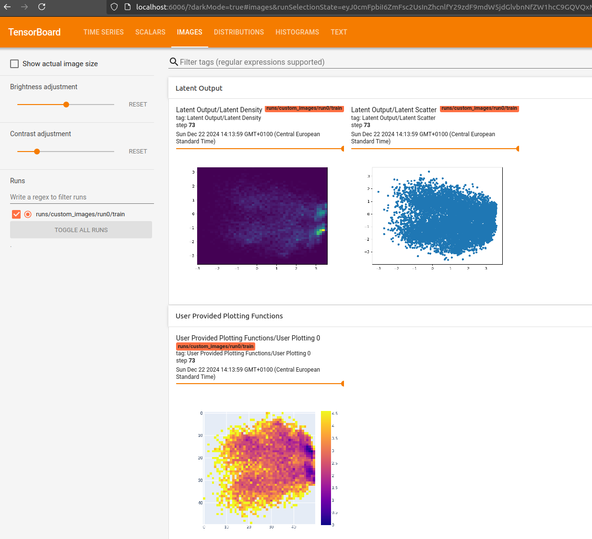
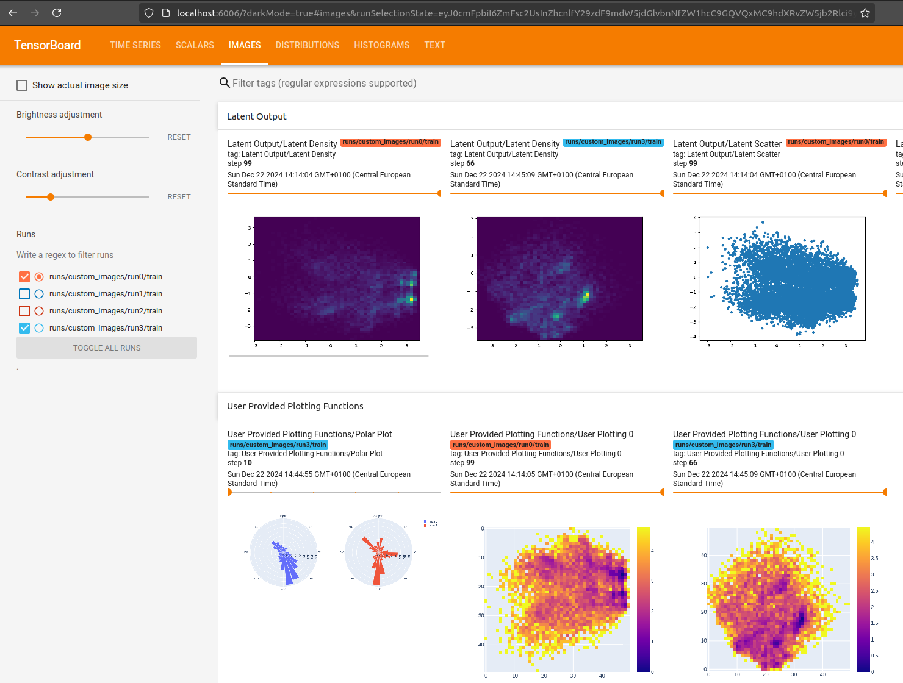

Logging Custom Images#
Run this notebook on Google Colab:

Find the documentation of EncoderMap:
https://ag-peter.github.io/encodermap
For Google colab only:#
If you’re on Google colab, please uncomment these lines and install EncoderMap.
[1]:
# !wget https://raw.githubusercontent.com/AG-Peter/encodermap/main/tutorials/install_encodermap_google_colab.sh
# !sudo bash install_encodermap_google_colab.sh
Primer#
In this tutorial we will learn how to write custom images to Tensorboard. This can be done in two ways:
Providing
encodermap.EncoderMap.add_images_to_tensorboardwith addtional functions that return a stringIO buffer object and use the latent space of the Autoencoder.Writing custom callbacks and adding them to EncoderMap.
As usual, we will start to import some packages. Along the usual packages we import the built-in package io.
[2]:
import numpy as np
import encodermap as em
import tensorflow as tf
import matplotlib.pyplot as plt
import matplotlib as mpl
import matplotlib
import pandas as pd
import io
%matplotlib inline
2023-02-06 17:13:21.829830: I tensorflow/core/platform/cpu_feature_guard.cc:193] This TensorFlow binary is optimized with oneAPI Deep Neural Network Library (oneDNN) to use the following CPU instructions in performance-critical operations: AVX2 AVX512F FMA
To enable them in other operations, rebuild TensorFlow with the appropriate compiler flags.
2023-02-06 17:13:21.954587: W tensorflow/compiler/xla/stream_executor/platform/default/dso_loader.cc:64] Could not load dynamic library 'libcudart.so.11.0'; dlerror: libcudart.so.11.0: cannot open shared object file: No such file or directory; LD_LIBRARY_PATH: /opt/hostedtoolcache/Python/3.9.16/x64/lib
2023-02-06 17:13:21.954609: I tensorflow/compiler/xla/stream_executor/cuda/cudart_stub.cc:29] Ignore above cudart dlerror if you do not have a GPU set up on your machine.
2023-02-06 17:13:22.604621: W tensorflow/compiler/xla/stream_executor/platform/default/dso_loader.cc:64] Could not load dynamic library 'libnvinfer.so.7'; dlerror: libnvinfer.so.7: cannot open shared object file: No such file or directory; LD_LIBRARY_PATH: /opt/hostedtoolcache/Python/3.9.16/x64/lib
2023-02-06 17:13:22.604695: W tensorflow/compiler/xla/stream_executor/platform/default/dso_loader.cc:64] Could not load dynamic library 'libnvinfer_plugin.so.7'; dlerror: libnvinfer_plugin.so.7: cannot open shared object file: No such file or directory; LD_LIBRARY_PATH: /opt/hostedtoolcache/Python/3.9.16/x64/lib
2023-02-06 17:13:22.604702: W tensorflow/compiler/tf2tensorrt/utils/py_utils.cc:38] TF-TRT Warning: Cannot dlopen some TensorRT libraries. If you would like to use Nvidia GPU with TensorRT, please make sure the missing libraries mentioned above are installed properly.
We will use io to write a png-file to a buffer (not to disk) and provide that puffer to Tensorboard for visualization. But first, let us think about what to plot.
Logging via a custom function.#
Idea: Plot the inverted-log density of the low-dimensional/bottleneck/latent-space which correlates to the system’s free energy surface (not quite, but let’s assume it does).
First let’s start plotting such a graph in pure matploltib. As example data we will use a 2D Gaussian. We know what to expect from a hypothetical free energy landscape of such a point distribution. Low free energies in the middle, where the density is high and high free energies at the fringes, where the points are less dense.
[3]:
xy_data = np.vstack([np.random.normal(size=20000), np.random.normal(size=20000)]).T
plt.close('all')
plt.scatter(*xy_data.T)
[3]:
<matplotlib.collections.PathCollection at 0x7ff63a9e1700>

Matplotlib implementation#
[4]:
def to_free_energy(xy, bins=100):
"""Adapted from pyemma.plots.plot_free_energy()"""
# create histogram
H, xedges, yedges = np.histogram2d(*xy.T, bins=bins)
x = 0.5 * (xedges[:-1] + xedges[1:])
y = 0.5 * (yedges[:-1] + yedges[1:])
# to density
density = H / float(H.sum())
# to free energy
F = np.inf * np.ones(shape=H.shape)
nonzero = density.nonzero()
F[nonzero] = - np.log(density[nonzero])
# shift so no zeros happen
F[nonzero] -= np.min(F[nonzero])
return x, y, F
plt.close('all')
fig, ax = plt.subplots()
mappable = plt.contourf(*to_free_energy(xy_data), cmap='turbo', levels=100)
cax = fig.colorbar(mappable, ax=ax)
cax.set_label("free energy / kT")

Provide this function to EncoderMap#
We need to make some adjustments to be able to see similar images in tensorboard. First: Everything needs to be contained in a single function, that takes the low-dimensional output of the encoder as input. Second: The function needs to return a tensorflow image.
Some other lines we have to add: - matplotlib.use('Agg'). Overwrites the current matplotlib backend. So the images created during training are not rendered in the notebook. - buf = io.BytesIO(). Raw bytecode buffer. These are the actual bytes that would have ended up on your disk, if you would have written the png to it.
[5]:
def free_energy_tensorboard(lowd):
plt.close('all')
matplotlib.use('Agg') # overwrites current backend of notebook
# calculate free energy
H, xedges, yedges = np.histogram2d(*lowd.T, bins=50)
x = 0.5 * (xedges[:-1] + xedges[1:])
y = 0.5 * (yedges[:-1] + yedges[1:])
# to density
density = H / float(H.sum())
# to free energy
F = np.inf * np.ones(shape=H.shape)
nonzero = density.nonzero()
F[nonzero] = - np.log(density[nonzero])
# shift so no zeros happen
F[nonzero] -= np.min(F[nonzero])
# actual plotting
fig, ax = plt.subplots()
mappable = plt.contourf(x, y, F, cmap='turbo', levels=100)
cax = fig.colorbar(mappable, ax=ax)
cax.set_label("free energy / kT")
# BytesIO
buf = io.BytesIO()
plt.savefig(buf, format='png')
buf.seek(0)
# tensorflow
image = tf.image.decode_png(buf.getvalue(), 4) # 4 is due to RGBA colors.
image = tf.expand_dims(image, 0)
return image
This function will return a tf.Tensor, that we can now log in tensorboard.
[6]:
free_energy_tensorboard(xy_data)
2023-02-06 17:13:25.863311: W tensorflow/compiler/xla/stream_executor/platform/default/dso_loader.cc:64] Could not load dynamic library 'libcuda.so.1'; dlerror: libcuda.so.1: cannot open shared object file: No such file or directory; LD_LIBRARY_PATH: /opt/hostedtoolcache/Python/3.9.16/x64/lib
2023-02-06 17:13:25.863339: W tensorflow/compiler/xla/stream_executor/cuda/cuda_driver.cc:265] failed call to cuInit: UNKNOWN ERROR (303)
2023-02-06 17:13:25.863358: I tensorflow/compiler/xla/stream_executor/cuda/cuda_diagnostics.cc:156] kernel driver does not appear to be running on this host (fv-az570-137): /proc/driver/nvidia/version does not exist
2023-02-06 17:13:25.863636: I tensorflow/core/platform/cpu_feature_guard.cc:193] This TensorFlow binary is optimized with oneAPI Deep Neural Network Library (oneDNN) to use the following CPU instructions in performance-critical operations: AVX2 AVX512F FMA
To enable them in other operations, rebuild TensorFlow with the appropriate compiler flags.
[6]:
<tf.Tensor: shape=(1, 480, 640, 4), dtype=uint8, numpy=
array([[[[255, 255, 255, 255],
[255, 255, 255, 255],
[255, 255, 255, 255],
...,
[255, 255, 255, 255],
[255, 255, 255, 255],
[255, 255, 255, 255]],
[[255, 255, 255, 255],
[255, 255, 255, 255],
[255, 255, 255, 255],
...,
[255, 255, 255, 255],
[255, 255, 255, 255],
[255, 255, 255, 255]],
[[255, 255, 255, 255],
[255, 255, 255, 255],
[255, 255, 255, 255],
...,
[255, 255, 255, 255],
[255, 255, 255, 255],
[255, 255, 255, 255]],
...,
[[255, 255, 255, 255],
[255, 255, 255, 255],
[255, 255, 255, 255],
...,
[255, 255, 255, 255],
[255, 255, 255, 255],
[255, 255, 255, 255]],
[[255, 255, 255, 255],
[255, 255, 255, 255],
[255, 255, 255, 255],
...,
[255, 255, 255, 255],
[255, 255, 255, 255],
[255, 255, 255, 255]],
[[255, 255, 255, 255],
[255, 255, 255, 255],
[255, 255, 255, 255],
...,
[255, 255, 255, 255],
[255, 255, 255, 255],
[255, 255, 255, 255]]]], dtype=uint8)>
Train EncoderMap with our new function.#
First get the input data
[7]:
df = pd.read_csv('asp7.csv')
dihedrals = df.iloc[:,:-1].values.astype(np.float32)
cluster_ids = df.iloc[:,-1].values
print(dihedrals.shape, cluster_ids.shape)
print(df.shape)
(10001, 12) (10001,)
(10001, 13)
Cerate the parameters.
[8]:
parameters = em.Parameters(
tensorboard=True,
periodicity=2*np.pi,
n_steps=100,
main_path=em.misc.run_path('runs/custom_images')
)
When calling the method add_images_to_tensorboard() we can provide a list of additional functions. That way we can add as much custom functions as we like. In this case, we only add the new free_energy_tensorboard function.
[9]:
e_map = em.EncoderMap(parameters, dihedrals)
e_map.add_images_to_tensorboard(dihedrals, image_step=1, additional_fns=[free_energy_tensorboard])
Output files are saved to runs/custom_images/run0 as defined in 'main_path' in the parameters.
You must install pydot (`pip install pydot`) and install graphviz (see instructions at https://graphviz.gitlab.io/download/) for plot_model to work.
Saved a text-summary of the model and an image in runs/custom_images/run0, as specified in 'main_path' in the parameters.
Logging images with (10001, 12)-shaped data every 1 epochs to Tensorboard at runs/custom_images/run0
[10]:
e_map.train()
100%|██████████| 100/100 [01:11<00:00, 1.39it/s, Loss after step 100=36.3]
WARNING:absl:Function `_wrapped_model` contains input name(s) Encoder_0_input with unsupported characters which will be renamed to encoder_0_input in the SavedModel.
WARNING:absl:Function `_wrapped_model` contains input name(s) Decoder_0_input with unsupported characters which will be renamed to decoder_0_input in the SavedModel.
Output#
Start tensorboard locally via:
$ tensorboard --logdir . --reload_multifile True
If you’re on Google colab, you can use tensorboard by loading the tensorboard extension:
[11]:
# %load_ext tensorboard
# %tensorboard --logdir .
Here’s what Tensorboard should display:

After training we can use the to_free_energy() to plot the latent space after the training is finished.
[12]:
def to_free_energy(xy, bins=100):
"""Adapted from pyemma.plots.plot_free_energy()"""
# create histogram
H, xedges, yedges = np.histogram2d(*xy.T, bins=bins)
x = 0.5 * (xedges[:-1] + xedges[1:])
y = 0.5 * (yedges[:-1] + yedges[1:])
# to density
density = H / float(H.sum())
# to free energy
F = np.inf * np.ones(shape=H.shape)
nonzero = density.nonzero()
F[nonzero] = - np.log(density[nonzero])
# shift so no zeros happen
F[nonzero] -= np.min(F[nonzero])
return x, y, F
%matplotlib notebook
plt.close('all')
fig, ax = plt.subplots()
mappable = plt.contourf(*to_free_energy(e_map.encode(dihedrals)), cmap='turbo', levels=100)
cax = fig.colorbar(mappable, ax=ax)
cax.set_label("free energy / kT")
Writing custom callbacks#
Writing custom callbacks gives us much more freedom. We can use all kinds of data, that can be provided at the instantiation of a callback. We can also write the images to drive, and so on. We will use tf.keras.callbacks.Callback subclassing to feed the dihedral angles of Asp7 trhough the Autoencoder (encode and decode) and use the output dihedral angles to plot a polar histogram.
Matplotlib#
We’ll use the input dihedrals to develop our plot.
[13]:
%matplotlib notebook
plt.close('all')
fig = plt.figure()
ax = fig.add_subplot(111, projection='polar')
radii, bins = np.histogram(dihedrals, bins=25)
widths = np.diff(bins)
patches = ax.bar(bins[:-1], radii, align='edge', width=widths, edgecolor='k', fill=True)
plt.show()
Subclassing a keras callback#
Subcalssing a keras callback gives us access to these methods:
class CustomCallback(keras.callbacks.Callback):
def on_train_begin(self, logs=None):
keys = list(logs.keys())
print("Starting training; got log keys: {}".format(keys))
def on_train_end(self, logs=None):
keys = list(logs.keys())
print("Stop training; got log keys: {}".format(keys))
def on_epoch_begin(self, epoch, logs=None):
keys = list(logs.keys())
print("Start epoch {} of training; got log keys: {}".format(epoch, keys))
def on_epoch_end(self, epoch, logs=None):
keys = list(logs.keys())
print("End epoch {} of training; got log keys: {}".format(epoch, keys))
def on_train_batch_begin(self, batch, logs=None):
keys = list(logs.keys())
print("...Training: start of batch {}; got log keys: {}".format(batch, keys))
def on_train_batch_end(self, batch, logs=None):
keys = list(logs.keys())
print("...Training: end of batch {}; got log keys: {}".format(batch, keys))
Additionally, the callback contains the model as an instance variable self.model. So let’s create our own callback and overwrite the parent class’ on_epoch_end() method to use for plotting purposes.
The method _polar_plotting() will follow the same scheme we used for the free energy, i.e. it will return a tensorflow image.
[14]:
class PolarHistogramCallback(tf.keras.callbacks.Callback):
def __init__(self, inp_data):
super().__init__()
self.inp_data = inp_data
def on_epoch_end(self, epoch, logs={}):
highd = self.model(self.inp_data)
image = self._polar_plotting(highd)
with tf.name_scope("User Provided Plotting Functions"):
tf.summary.image(f"Polar Plot at epoch {epoch}", image, step=epoch)
def _polar_plotting(self, highd):
plt.close('all')
matplotlib.use('Agg') # overwrites current backend of notebook
# create figure
fig = plt.figure()
ax = fig.add_subplot(111, projection='polar')
# histogram
radii, bins = np.histogram(highd, bins=25)
widths = np.diff(bins)
# plot the patches
patches = ax.bar(bins[:-1], radii, align='edge', width=widths, edgecolor='k', fill=True)
# BytesIO
buf = io.BytesIO()
plt.savefig(buf, format='png')
buf.seek(0)
# tensorflow
image = tf.image.decode_png(buf.getvalue(), 4) # 4 is due to RGBA colors.
image = tf.expand_dims(image, 0)
return image
Adding the callback to EncoderMap#
Before starting the training we will simply append an instance of our callback to the EncoderMap class’ own callbacks list. We don’t even have to call the add_images_to_tensorboard() method.
If we wanted to only create an image every n, or so, epochs, we could provide em.Parameters to the __init__() method of our new callback and add a line like so:
if epoch % self.parameters.n_summary_step == 0:
create_image()
....
[15]:
parameters = em.Parameters(
tensorboard=True,
n_steps=100,
periodicity=2*np.pi,
main_path=em.misc.run_path('runs/custom_images')
)
[16]:
e_map = em.EncoderMap(parameters, dihedrals)
e_map.add_images_to_tensorboard(dihedrals, image_step=1, additional_fns=[free_energy_tensorboard])
# add the new callback
callback = PolarHistogramCallback(dihedrals)
e_map.callbacks.append(callback)
Output files are saved to runs/custom_images/run1 as defined in 'main_path' in the parameters.
You must install pydot (`pip install pydot`) and install graphviz (see instructions at https://graphviz.gitlab.io/download/) for plot_model to work.
Saved a text-summary of the model and an image in runs/custom_images/run1, as specified in 'main_path' in the parameters.
Logging images with (10001, 12)-shaped data every 1 epochs to Tensorboard at runs/custom_images/run1
[17]:
e_map.train()
100%|██████████| 100/100 [01:36<00:00, 1.04it/s, Loss after step 100=33.6]
WARNING:absl:Function `_wrapped_model` contains input name(s) Encoder_0_input with unsupported characters which will be renamed to encoder_0_input in the SavedModel.
WARNING:absl:Function `_wrapped_model` contains input name(s) Decoder_0_input with unsupported characters which will be renamed to decoder_0_input in the SavedModel.
Output#
The output from Tensorboard could look something like this:

[18]:
%matplotlib notebook
plt.close('all')
fig = plt.figure()
ax = fig.add_subplot(111, projection='polar')
radii, bins = np.histogram(e_map.model(dihedrals), bins=25)
widths = np.diff(bins)
patches = ax.bar(bins[:-1], radii, align='edge', width=widths, edgecolor='k', fill=True)
plt.show()
Conclusion#
Using the tools provided in this notebook, you will be able to customize EncoderMap to your liking. Using images to visualize the output of the neural network is a much better visual aid, than just looking at graphs of raw data.